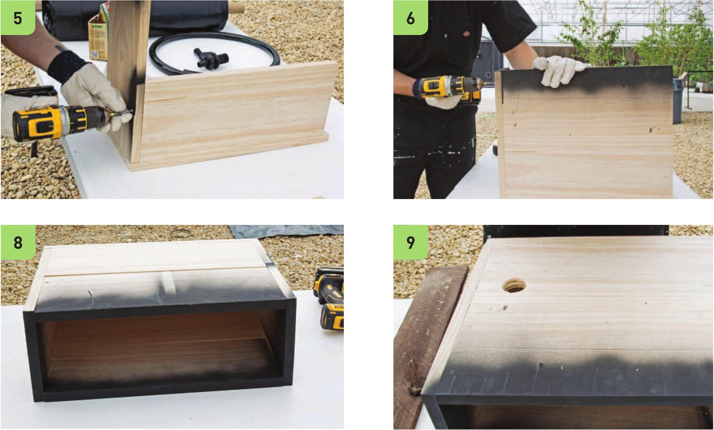

5 Fasten a 1 x 8" x 18" board to the 1 x 8" x UW board using two Vk" screws. 6 Fasten another 1 x 8" x 18" board to the 1 x 8" x I4V2" board to complete another side wall. 7 Repeat steps 5 and 6 to assemble the other side wall. 8 Fasten the remaining 1 x 8" x I4V2" board to complete the last wall of the frame. Install the Liner and Drainage Assembly 9 Measure and mark a hole with a center 6" above the bottom of the frame and 3" from the side wall. Use the IW hole saw drill bit to create the hole. 10 Use the step drill bit to create a slope around the hole on the outside of the frame. This slope is necessary to securely attach the fill/drain fitting. 11 Line the inside of the frame with 6 mil. plastic. Fold the plastic sheet at the corners to shape it to the frame. 64 DIY HYDROPONIC GARDENS
